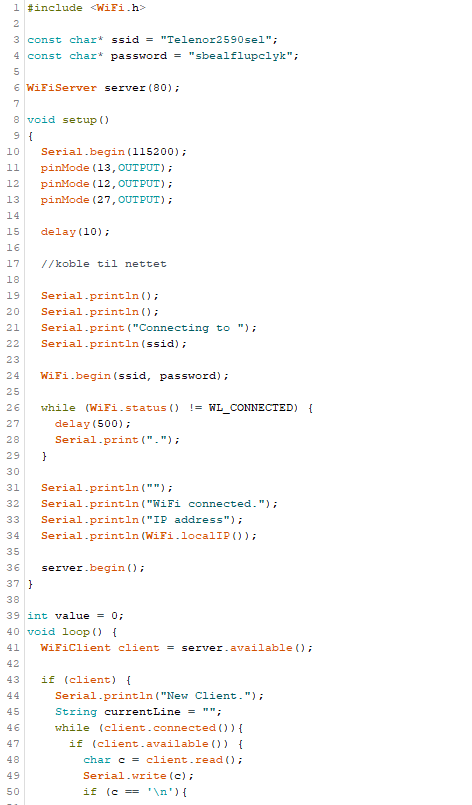

Prosjekt 6 - WiFi lyskontroll ESP32
For mitt sjette prosjekt i emnet skulle vi gjøre noe med ESP32. Jeg så mye på internett men fant ikke mye som jeg ønsket å gjøre. Jeg falt tilslutt på å videreutvikle prosjektet fra livestreamen til emnet. Jeg ønsket da å lage en webserver med esp32 hvor jeg kunne styre om lys jeg hadde koblet opp med esp32en lyste eller ikke. Jeg hadde kun plass til tre lys på breadboardet så jeg brukte henholdsvis rødt, gult og grønt lys.
Utstyr
For å få koblet opp lyset trengtes det noe ustyr, under har jeg listet opp ved bilde av de.
Ledninger:
Lys og resistorer:
Selve ESP32
ESPen jeg benyttet var Adafruit HUZZAH32 feather esp32.
Elektronikk
Selve koblingen av prosjektet var i teorien ikke spesielt vanskelig, men pga lite breadboard ble det noe vanskelig å få alle ledninger på riktig sted. Jeg fikk derimot det til etterhvert og koblingen ble slik:
Koding
Etter å ha koblet ferdig gikk jeg over på koding. Basisen fikk jeg fra livestreamen for emnet. Jeg la til i hovedsak de to ekstra outputtene, og gjorde slik at trykk på de nye linkene jeg la til på nettsiden ville utføre en handling. se bildene under for koden:
I bruk
Til slutt gjensto det kun å prøve om det fungerte. Noe det heldigvis gjorde. Nettsiden jeg konstruerte ble slik:
Under har jeg lagt noen forskjellige videoer av hvordan prosjektet fungerer.